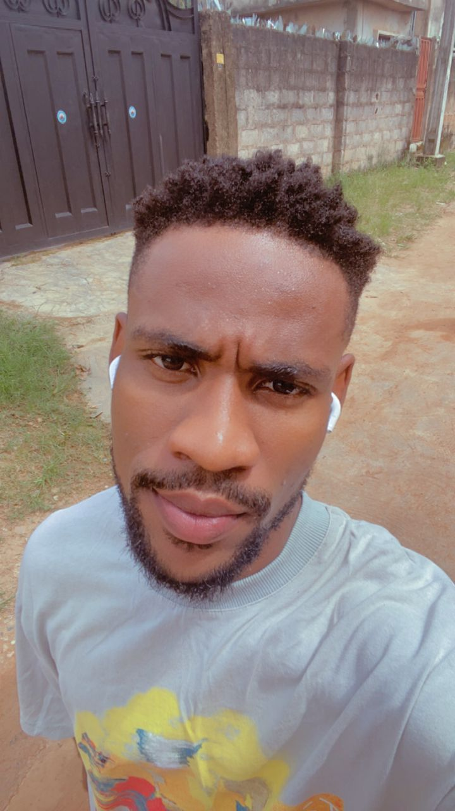

Effiong Precious

Summary
Dedicated and detail-oriented individual who possesses excellent communication skills and has the
ability to communicate professionally with clients and colleagues
Education
- First School Leaving Certificate - BFMSGS (2013-2016)
- BSc. Geology & Mineral Science - Unilorin (2018-2023)
Work Experience
Customer Service Rep - Nsebong Ventures
June 2017 - May 2018
- Answered customer inquiries via phone and email
- Maintained customer records
Skills
- Customer service: Excellent
- Microsift office: Good
- Organization Skills
- HTML
Awards and Certifications
- Best Sportsman of the year - NAPHSS Unilorin Chapter (2023)
- Dean's Cup Winner - For Geology 2019 & 2023
- Kwara Earth Science Football Champions - For Geology (Unilorin) 2019
- Dean's Cup Runner Up - For Geology (2020)
Other
My Hobbies
Contact Me